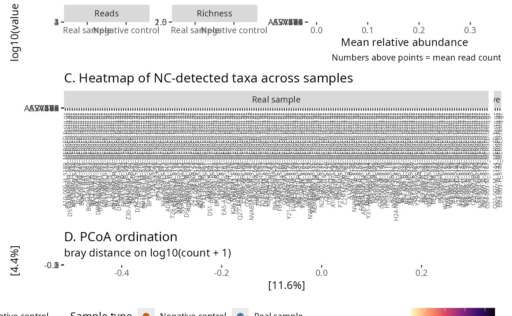

Build a four-panel patchwork figure to inspect potential contamination from negative-control samples (extraction blanks, PCR blanks, etc.).
Panels:
A boxplots of total reads and taxa richness per sample, split by negative-control status.
B dumbbell of the top contaminant taxa (mean relative abundance in NC vs real samples), with mean read counts annotated above each point.
C heatmap of the taxa detected in any negative control across all samples; absences are drawn in white, columns are faceted by NC status.
D PCoA ordination (Bray-Curtis by default) with samples coloured by NC status.
The patchwork subtitle reports the number of real and negative-control samples.
Usage
neg_control_diag_pq(
physeq,
neg_control,
top_n_heatmap = 30,
top_n_contaminant = 20,
log10_transform = TRUE,
ordination_method = "PCoA",
ordination_dist = "bray",
palette = c(`FALSE` = "#4C72B0", `TRUE` = "#D55E00"),
title = NULL
)Arguments
- physeq
(phyloseq, required) A phyloseq object.
- neg_control
An expression evaluated on sample_data that returns TRUE for negative-control samples (e.g., is_control == TRUE,sample_type == "blank"). Use.to refer to the phyloseq object.- top_n_heatmap
(integer, default: 30) Maximum number of taxa shown in the heatmap (panel C). Taxa are ranked by total reads in negative controls.
- top_n_contaminant
(integer, default: 20) Maximum number of taxa shown in the contaminant ranking (panel B).
- log10_transform
(logical, default: TRUE) If TRUE, apply
log10(x + 1)to the heatmap fill (panel C), the y-axis of panel A, and the ordination input (panel D). If FALSE, raw counts are used.- ordination_method
(character, default: "PCoA") Method passed to
phyloseq::ordinate().- ordination_dist
(character, default: "bray") Distance metric for the ordination.
- palette
(character) Length-2 named vector with entries
`FALSE`(real samples) and`TRUE`(negative controls). Defaults to a blue/orange contrast.- title
(character, default: NULL) Optional title placed above the figure. The subtitle (real / NC sample counts) is added automatically.
Value
A patchwork::patchwork object with the four diagnostic panels.
Examples
library(MiscMetabar)
data(data_fungi)
# Mark the three lowest-depth samples as mock controls for demo
pq <- mutate_samdata_pq(
data_fungi,
is_control = sample_sums(.) < sort(sample_sums(.))[4]
)
neg_control_diag_pq(pq, is_control)
#> Warning: `aes_string()` was deprecated in ggplot2 3.0.0.
#> ℹ Please use tidy evaluation idioms with `aes()`.
#> ℹ See also `vignette("ggplot2-in-packages")` for more information.
#> ℹ The deprecated feature was likely used in the phyloseq package.
#> Please report the issue at <https://github.com/joey711/phyloseq/issues>.
